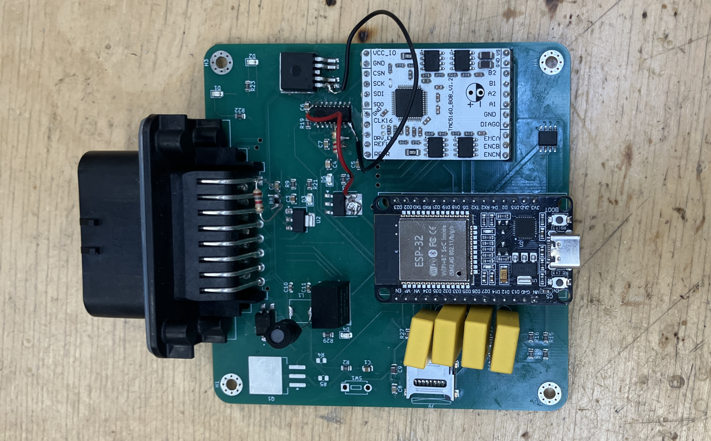

E-Throttle
Summary
The electronic throttle (E-Throttle) project replaces the mechanical throttle cable with an electronically controlled throttle body, which brings benefits such as improved control of the fuel/air ratio. The goal is to redesign and validate the Electronic Throttle Control for proper operation and compliance with Formula Student safety regulations. The E-Throttle system consists of two Accelerator Pedal Position Sensors (APPS) at the pedal, two Throttle Position Sensors (TPS) with a stepper motor at the throttle body, and a central control board. This controller processes sensor inputs and implements redundant, safety-critical control in compliance with the Formula Student regulations.
What I did
- Breadboard prototyped open-loop control of the stepper motor from the APPS sensors before committing to a board design.
- Designed the control PCB in KiCad with hardware-level safety built in: independent watchdog timers, high-side FETs, and relays, so a firmware hang or sensor fault cuts power to the throttle actuator without relying on the microcontroller.
- Assembled the board and tested each subsystem individually (power, sensor inputs, watchdog, FET and relay switching, stepper driver). All components functional.
- Developing the throttle controller firmware on the ESP32 to drive the stepper motor from APPS input with closed-loop feedback from the TPS sensors.
Future steps
- Closed-loop PID control of throttle position using TPS feedback.
- Software safety features required by the regulations: plausibility checks between the redundant APPS and TPS sensors, and safe shutdown on implausible readings.
- Integrate with the car and validate the full system against the Formula Student safety rules.
Skills
KiCad
PCB Design
ESP32
Arduino C++
Stepper Motor Control